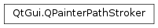

QPainterPathStroker¶
Synopsis¶
Functions¶
- def
capStyle() - def
createStroke(path) - def
curveThreshold() - def
dashOffset() - def
dashPattern() - def
joinStyle() - def
miterLimit() - def
setCapStyle(style) - def
setCurveThreshold(threshold) - def
setDashOffset(offset) - def
setDashPattern(arg__1) - def
setDashPattern(dashPattern) - def
setJoinStyle(style) - def
setMiterLimit(length) - def
setWidth(width) - def
width()
Detailed Description¶
The
PySide2.QtGui.QPainterPathStrokerclass is used to generate fillable outlines for a given painter path.By calling the
PySide2.QtGui.QPainterPathStroker.createStroke()function, passing a givenPySide2.QtGui.QPainterPathas argument, a new painter path representing the outline of the given path is created. The newly created painter path can then be filled to draw the original painter path’s outline.You can control the various design aspects (width, cap styles, join styles and dash pattern) of the outlining using the following functions:
PySide2.QtGui.QPainterPathStroker.setWidth()PySide2.QtGui.QPainterPathStroker.setCapStyle()PySide2.QtGui.QPainterPathStroker.setJoinStyle()PySide2.QtGui.QPainterPathStroker.setDashPattern()The
PySide2.QtGui.QPainterPathStroker.setDashPattern()function accepts both aQt.PenStyleobject and a vector representation of the pattern as argument.In addition you can specify a curve’s threshold, controlling the granularity with which a curve is drawn, using the
PySide2.QtGui.QPainterPathStroker.setCurveThreshold()function. The default threshold is a well adjusted value (0.25), and normally you should not need to modify it. However, you can make the curve’s appearance smoother by decreasing its value.You can also control the miter limit for the generated outline using the
PySide2.QtGui.QPainterPathStroker.setMiterLimit()function. The miter limit describes how far from each join the miter join can extend. The limit is specified in the units of width so the pixelwise miter limit will bemiterlimit * width. This value is only used if the join style isQt.MiterJoin.The painter path generated by the
PySide2.QtGui.QPainterPathStroker.createStroke()function should only be used for outlining the given painter path. Otherwise it may cause unexpected behavior. Generated outlines also require theQt.WindingFillrule which is set by default.See also
-
class
PySide2.QtGui.QPainterPathStroker¶ -
class
PySide2.QtGui.QPainterPathStroker(pen) Parameters: pen – PySide2.QtGui.QPenCreates a new stroker.
Creates a new stroker based on
pen.
-
PySide2.QtGui.QPainterPathStroker.capStyle()¶ Return type: PySide2.QtCore.Qt.PenCapStyleReturns the cap style of the generated outlines.
-
PySide2.QtGui.QPainterPathStroker.createStroke(path)¶ Parameters: path – PySide2.QtGui.QPainterPathReturn type: PySide2.QtGui.QPainterPathGenerates a new path that is a fillable area representing the outline of the given
path.The various design aspects of the outline are based on the stroker’s properties:
PySide2.QtGui.QPainterPathStroker.width(),PySide2.QtGui.QPainterPathStroker.capStyle(),PySide2.QtGui.QPainterPathStroker.joinStyle(),PySide2.QtGui.QPainterPathStroker.dashPattern(),PySide2.QtGui.QPainterPathStroker.curveThreshold()andPySide2.QtGui.QPainterPathStroker.miterLimit().The generated path should only be used for outlining the given painter path. Otherwise it may cause unexpected behavior. Generated outlines also require the
Qt.WindingFillrule which is set by default.
-
PySide2.QtGui.QPainterPathStroker.curveThreshold()¶ Return type: PySide2.QtCore.qrealReturns the curve flattening threshold for the generated outlines.
-
PySide2.QtGui.QPainterPathStroker.dashOffset()¶ Return type: PySide2.QtCore.qrealReturns the dash offset for the generated outlines.
-
PySide2.QtGui.QPainterPathStroker.dashPattern()¶ Return type: Returns the dash pattern for the generated outlines.
-
PySide2.QtGui.QPainterPathStroker.joinStyle()¶ Return type: PySide2.QtCore.Qt.PenJoinStyleReturns the join style of the generated outlines.
-
PySide2.QtGui.QPainterPathStroker.miterLimit()¶ Return type: PySide2.QtCore.qrealReturns the miter limit for the generated outlines.
-
PySide2.QtGui.QPainterPathStroker.setCapStyle(style)¶ Parameters: style – PySide2.QtCore.Qt.PenCapStyleSets the cap style of the generated outlines to
style. If a dash pattern is set, each segment of the pattern is subject to the capstyle.
-
PySide2.QtGui.QPainterPathStroker.setCurveThreshold(threshold)¶ Parameters: threshold – PySide2.QtCore.qrealSpecifies the curve flattening
threshold, controlling the granularity with which the generated outlines’ curve is drawn.The default threshold is a well adjusted value (0.25), and normally you should not need to modify it. However, you can make the curve’s appearance smoother by decreasing its value.
-
PySide2.QtGui.QPainterPathStroker.setDashOffset(offset)¶ Parameters: offset – PySide2.QtCore.qrealSets the dash offset for the generated outlines to
offset.See the documentation for
QPen.setDashOffset()for a description of the dash offset.
-
PySide2.QtGui.QPainterPathStroker.setDashPattern(dashPattern)¶ Parameters: dashPattern – This is an overloaded function.
Sets the dash pattern for the generated outlines to
dashPattern. This function makes it possible to specify custom dash patterns.Each element in the vector contains the lengths of the dashes and spaces in the stroke, beginning with the first dash in the first element, the first space in the second element, and alternating between dashes and spaces for each following pair of elements.
The vector can contain an odd number of elements, in which case the last element will be extended by the length of the first element when the pattern repeats.
-
PySide2.QtGui.QPainterPathStroker.setDashPattern(arg__1) Parameters: arg__1 – PySide2.QtCore.Qt.PenStyleSets the dash pattern for the generated outlines to
style.
-
PySide2.QtGui.QPainterPathStroker.setJoinStyle(style)¶ Parameters: style – PySide2.QtCore.Qt.PenJoinStyleSets the join style of the generated outlines to
style.
-
PySide2.QtGui.QPainterPathStroker.setMiterLimit(length)¶ Parameters: length – PySide2.QtCore.qrealSets the miter limit of the generated outlines to
limit.The miter limit describes how far from each join the miter join can extend. The limit is specified in units of the currently set width. So the pixelwise miter limit will be
miterlimit * width.This value is only used if the join style is
Qt.MiterJoin.
-
PySide2.QtGui.QPainterPathStroker.setWidth(width)¶ Parameters: width – PySide2.QtCore.qrealSets the width of the generated outline painter path to
width.The generated outlines will extend approximately 50% of
widthto each side of the given input path’s original outline.
-
PySide2.QtGui.QPainterPathStroker.width()¶ Return type: PySide2.QtCore.qrealReturns the width of the generated outlines.
© 2018 The Qt Company Ltd. Documentation contributions included herein are the copyrights of their respective owners. The documentation provided herein is licensed under the terms of the GNU Free Documentation License version 1.3 as published by the Free Software Foundation. Qt and respective logos are trademarks of The Qt Company Ltd. in Finland and/or other countries worldwide. All other trademarks are property of their respective owners.